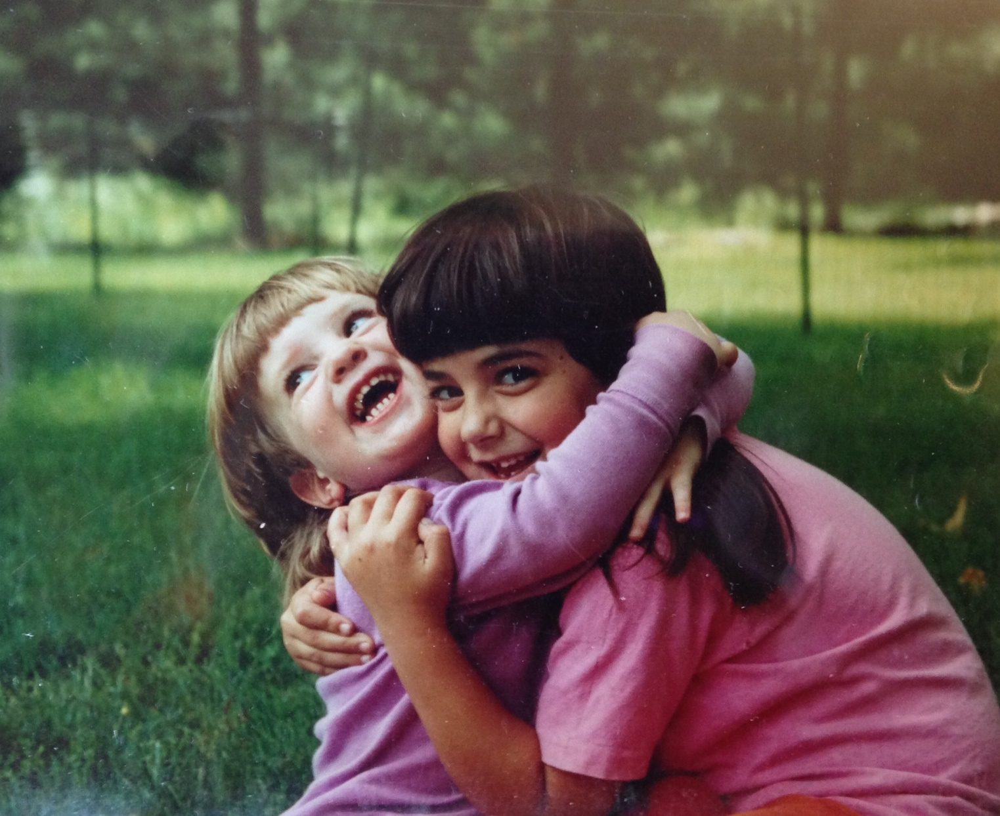

I am a Ph.D. student in the Department of Psychology at Stanford University, working with Ellen Markman and Carol Dweck. I am interested in social cognitive development, specifically children's developing understanding of sentience, personhood, and social partnership. Most of my work examines social reasoning through behavioral studies with children and adults. Recently, I have also become interested in examining cultural products (such as picture books) that serve both as records of adults' ideas about personhood and as sources of input for children as they learn what it means to be a person. More broadly, I am interested in drawing connections between developmental, cognitive, social, and cultural psychology, as well as philosophy.

Before coming to Stanford, I worked as a research/editorial assistant for Elizabeth Spelke through the Laboratory for Developmental Studies at Harvard University (2011-2013); as a research coordinator for the Preschool Relationships Enhancement Project and a research/development assistant for the Effective Classroom Interactions online course (now available on Coursera.org) at the University of Virginia (2011-2013); and as the lab manager of Kristin Shutts' Social Kids Lab at the University of Wisconsin-Madison (2009-2011). I graduated from Yale University with a B.A. in Cognitive Science in 2009, where I worked with Kristina Olson, David Ross, Tamar Szabó Gendler, Woo-Kyoung Ahn, and Teresa Treat.
You can also find me on Academia.edu or LinkedIn.com.